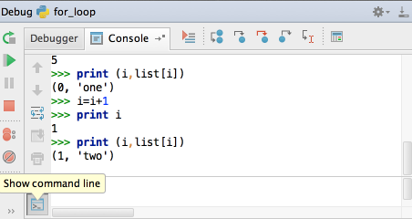

While debugging, you might need an interactive console at hand... This is most easy. During the debugging session, switch to the Debugger Console, and then press the very lowest button in its toolbar.
The console becomes interactive, and shows a prompt, where you can enter commands, and view output.
